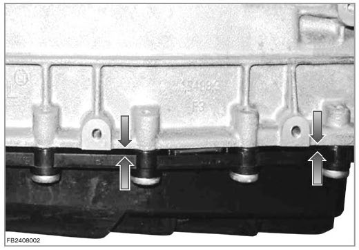
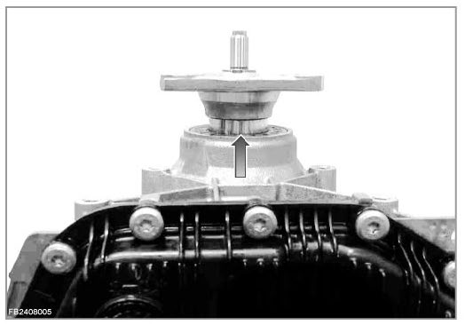
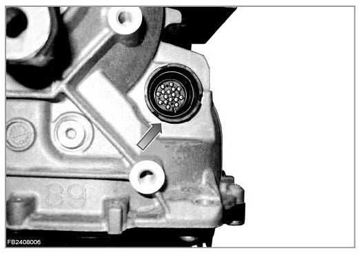
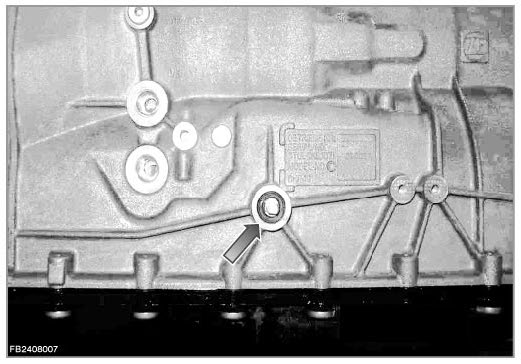

Automatic Transmission/Transaxle: Testing and Inspection
Gearbox Leakage
Gearbox leakage
Noticeable symptoms:
The automatic transmission is leaking around the continuous oil sump gasket.
NOTE: Analyses have shown that in only the rarest of cases is the cause of this fault pattern the oil sump gasket or plastic oil sump.
The following graphics show the areas that could be leaking, marked by arrows.
Graphic 1:
- Oil sump gasket

Graphic 2:
- Output flange

Graphic 3:
- Connector housing

Graphic 4:
- Gearshift shaft
